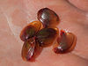

conchostraca

Has synonym(s): clam shrimp
Definition: Clam shrimp are a group of bivalved branchiopod crustaceans that resemble the unrelated bivalved molluscs. They are extant and also known from the fossil record, from at least the Devonian period and perhaps before. They were originally classified in the former order Conchostraca, which later proved to be paraphyletic, due to the fact that water fleas are nested within clam shrimps. Clam shrimp are now divided into three orders, Cyclestherida, Laevicaudata, and Spinicaudata, in addition to the fossil family Leaiidae.
Source: Wikipedia
Wikipedia Page (Something wrong with this association? Let us know.)
Wikidata Page (Something wrong with this association? Let us know.)